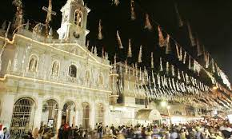
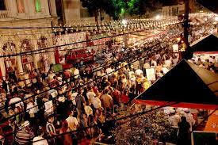
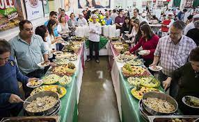
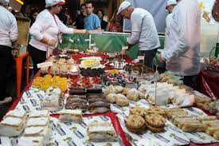
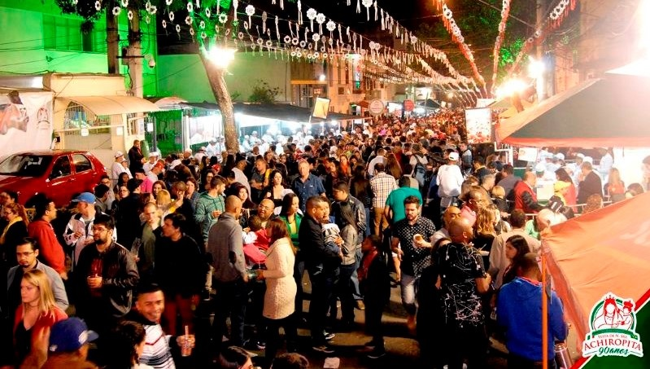
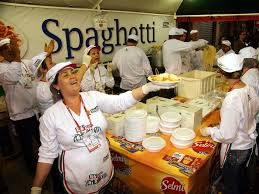
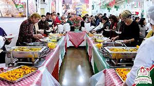
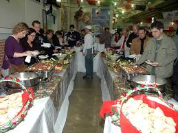
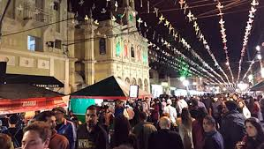

“FESTA DE NOSSA SENHORA ACHIROPITA”
O clima de festa tem causa nobre. Isto porque, além de homenagear a Padroeira contribui com a arrecadação de fundos para a manutenção dos projetos sociais da Paróquia Nossa Senhora Achiropita. Para isso, mais de mil voluntários trabalham durante todo o período da Festa, ou seja, durante cinco fins de semana do mês de Agosto e mês de Setembro, em cerca de 30 barracas com comestíveis e brindes para oferecer aos visitantes que participam.
Entre os quitutes tipicamente italianos que podem ser provados, estão os denominados fricazzas, polentas, antepasti, peperoni, melanzanas ao forno, as sardelas, macarrões, pizzas e calabresas, e muito mais. Para servir os visitantes, a linha de produção das “fogazzas” de cada edição do evento conta com cerca de 200 preciosos e lutadores voluntários. O "queijo provolone”, que é uma tradição e um dos prêmios que todos desejam, por ser verdadeiramente delicioso, cada ano aumenta de tamanho e de peso. Porque a procura é muito grande.
E por outro lado, pelo fato de ser uma Festa Religiosa, naturalmente na programação geral, consta minuciosamente detalhada todas as homenagens e solenidades que serão realizadas, inclusive as visitações e orações a Nossa Senhora Achiropita; a bênção será concedida de hora em hora; a novena preparatória, em homenagem a NOSSA SENHORA, será rezada do dia 5 a 13 de Agosto; a Santa Missa solene com a coroação da Padroeira, será no 15 de agosto, às 20h; e a procissão em louvor a SANTÍSSIMA VIRGEM MARIA ACHIROPITA, será ao longo de todo o Bairro, no dia 20 de Agosto, às 15 horas.
“FOTOGRAFIAS DA FESTA”








